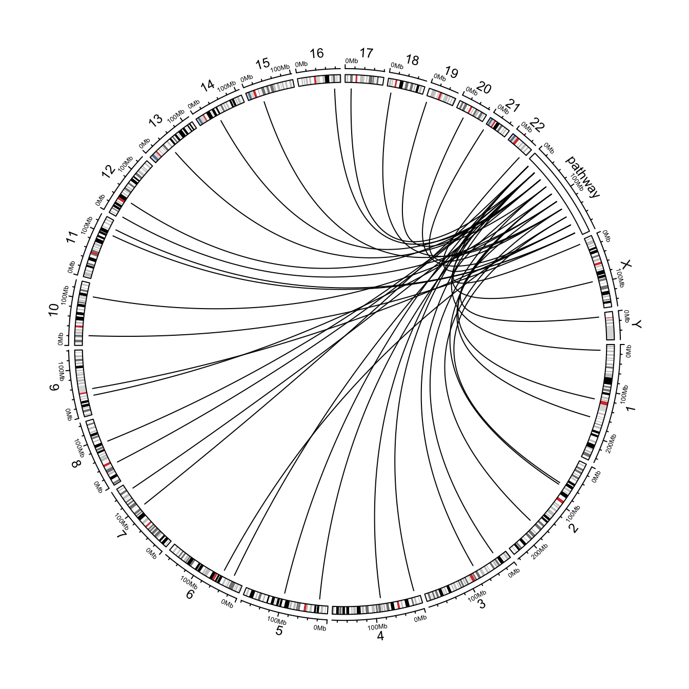
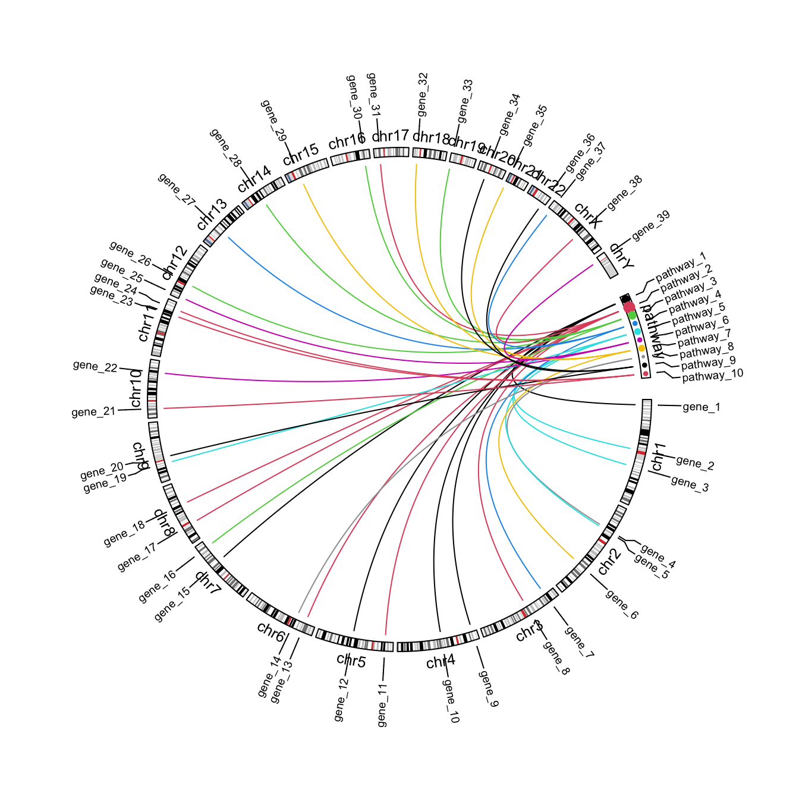

set.seed(123)
library(circlize)
df = generateRandomBed(30)[ , 1:3]
df[, 3] = df[, 2]
df$gene = paste0("gene_", 1:nrow(df))
df$pathway = paste0("pathway_", sample(10, nrow(df), replace = TRUE))
cytoband = read.cytoband()$df
cytoband = rbind(cytoband,
data.frame(V1 = "pathway", V2 = 1, V3 = 2e8, V4 = "", V5 = ""))
foo = as.integer(round(seq(1, 2e8, length = 11)))
pathway_mid = structure((foo[1:10] + foo[2:11])/2, names = paste0("pathway_", 1:10))
df$pathway_chr = "pathway"
df$pathway_start = pathway_mid[ df$pathway ]
df$pathway_end = pathway_mid[ df$pathway ]
circos.initializeWithIdeogram(cytoband)
circos.genomicLink(df[, 1:3], df[, 6:8])
circos.par(gap.after = c(rep(1, 23), 5, 5))
circos.genomicInitialize(cytoband, plotType = NULL)
label_df = rbind(df[, 1:4], setNames(df[, c(6:8, 5)], colnames(df)[1:4]))
label_df = unique(label_df)
circos.genomicLabels(label_df, labels.column = 4, side = "outside", cex = 0.6)
circos.track(track.index = get.current.track.index(), panel.fun = function(x, y) {
circos.text(CELL_META$xcenter, CELL_META$ylim[1], CELL_META$sector.index,
niceFacing = TRUE, adj = c(0.5, 0), cex = 0.8)
}, track.height = strheight("fj", cex = 0.8)*1.2, bg.border = NA, cell.padding = c(0, 0, 0, 0))
circos.genomicIdeogram(cytoband)
tb = table(df$pathway)
pathway_col = structure(1:10, names = paste0("pathway_", 1:10))
set.current.cell(sector.index = "pathway", track.index = get.current.track.index())
circos.points(x = pathway_mid[names(tb)], y = CELL_META$ycenter, pch = 16,
cex = tb/5, col = pathway_col[names(tb)])
circos.genomicLink(df[, 1:3], df[, 6:8], col = pathway_col[df[, 5]])
circos.clear()